TELION
Aqueles que buscam refúgio em Calísia certamente encontrarão proteção divina; isto é, aqueles que vêm com coração puro. A justiça da grande cidade é fulminante contra os ímpios, gloriosa para aqueles de valor.

Palavras-chave
Equipamento
Ao ser ativada, esta carta deve ser ligada a outra. A carta ativada com Equipamento não pode ser alvo direto de ataques, mas pode ser alvo de efeitos; além disso, ela continua provendo pontos igual ao valor de ativação.
Reação
Esta carta pode ser ativada do campo ou diretamente de sua mão a qualquer momento, sem consumir ações do turno. Se for ativada da mão, ponha-a em campo na forma ativada.
Salvaguarda
Enquanto estiverem em seu campo, apenas cartas com Salvaguarda podem ser atacadas ou afetadas por efeitos.
Galeria de cartas
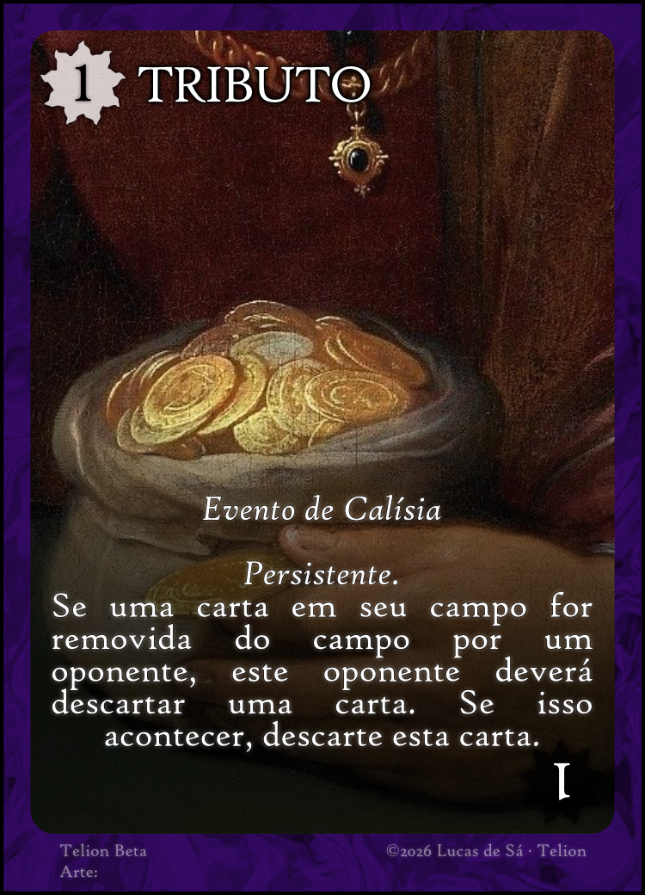
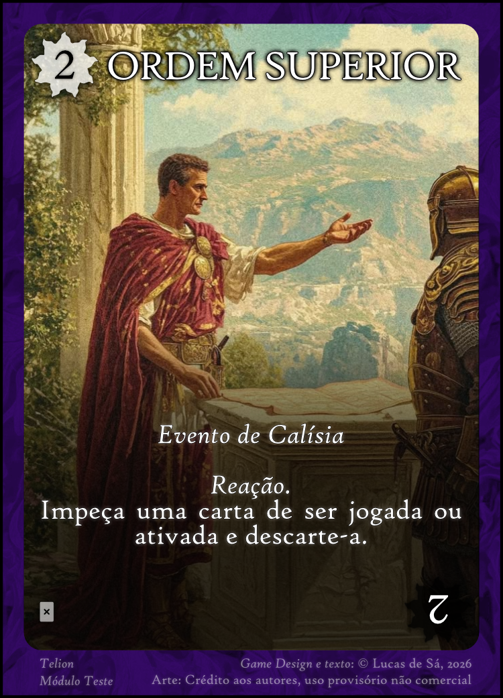
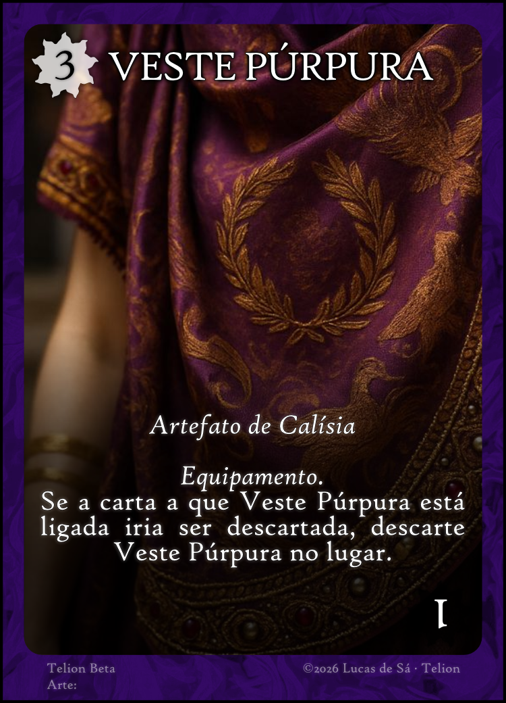
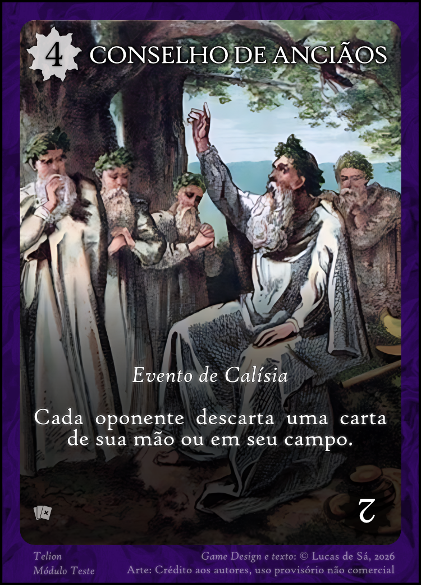
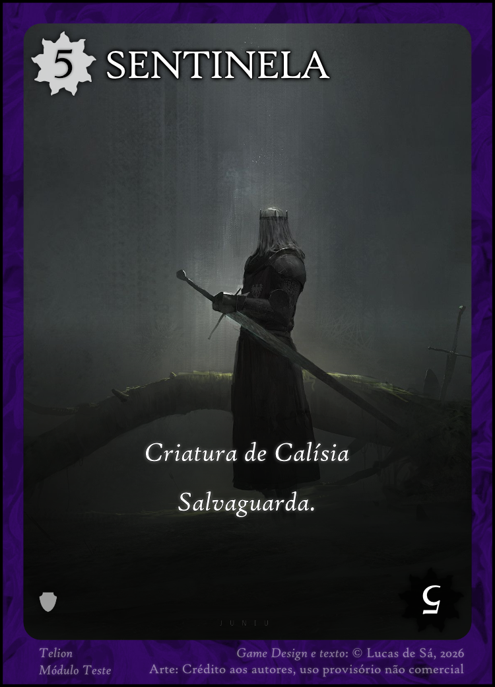
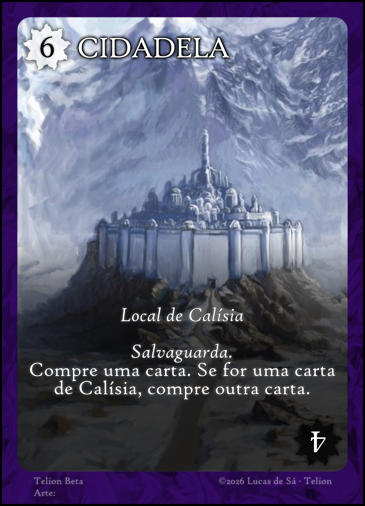
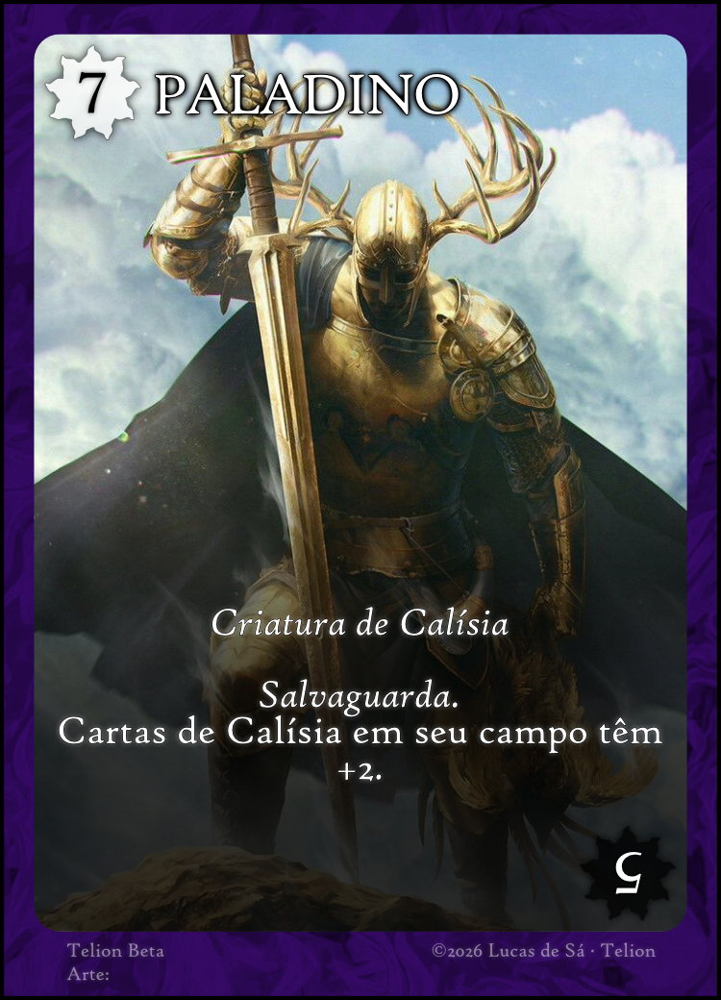
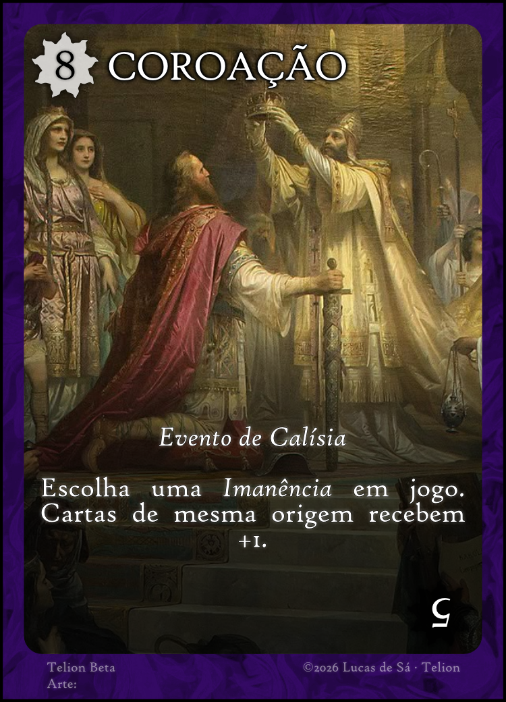
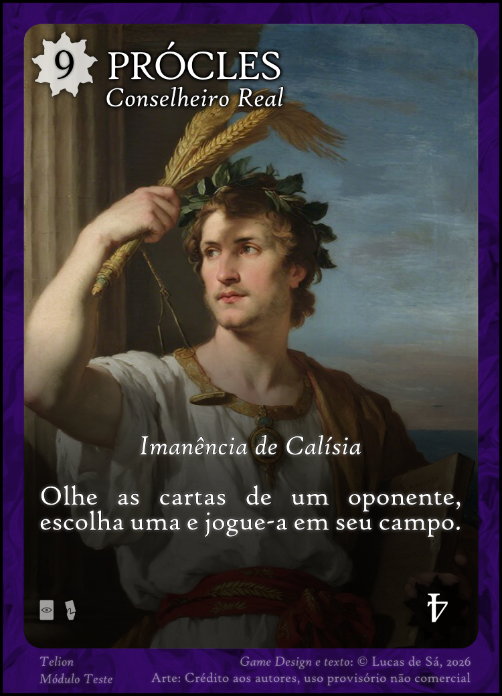
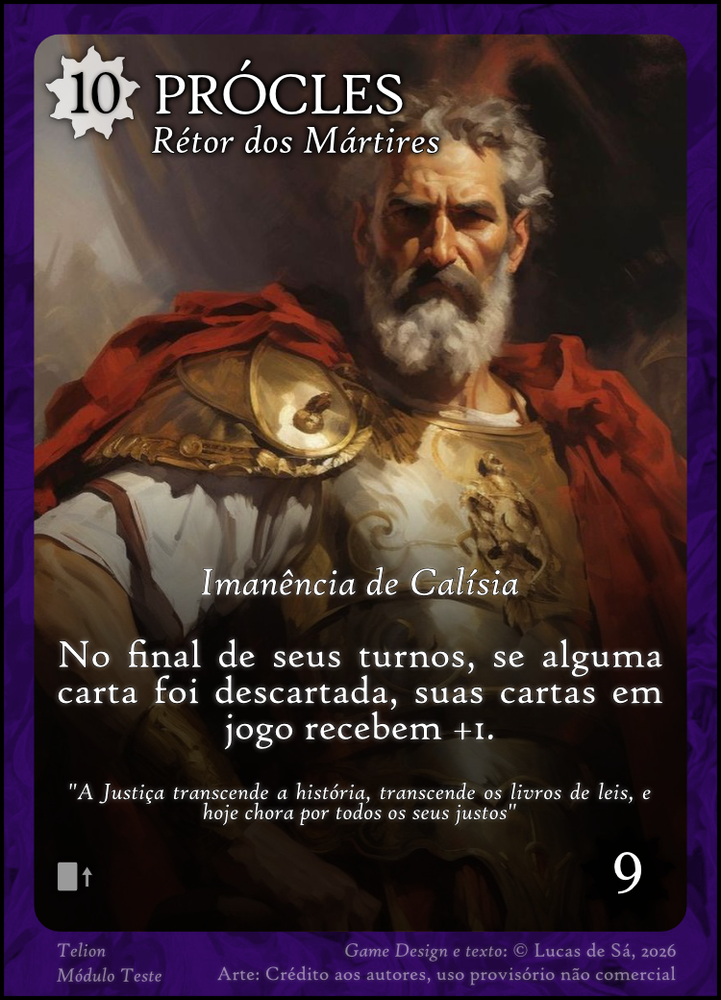
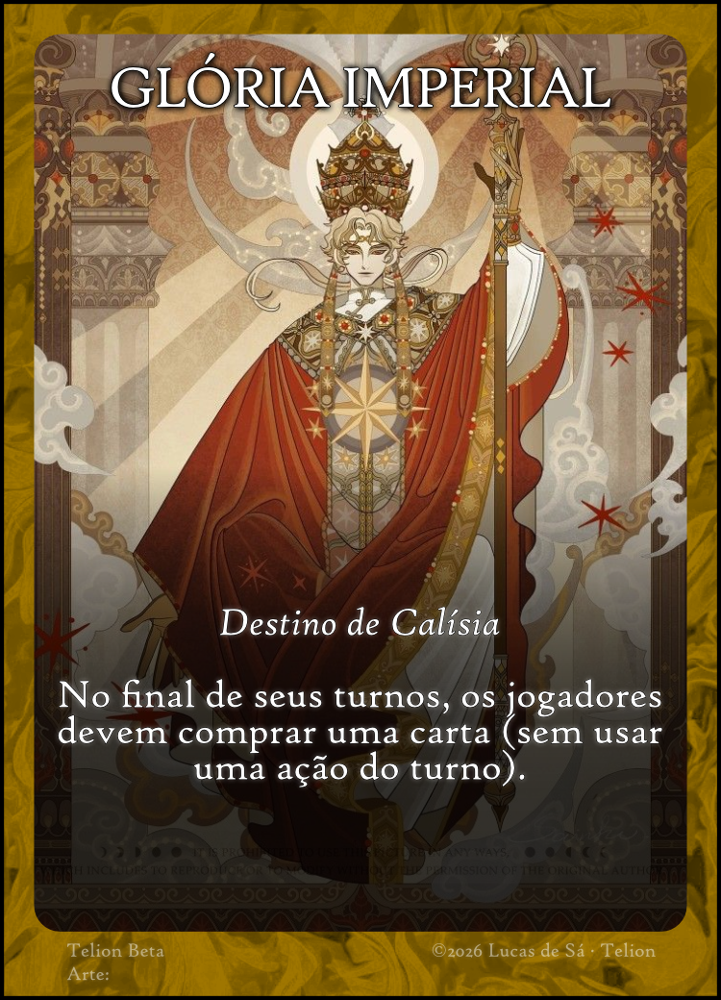
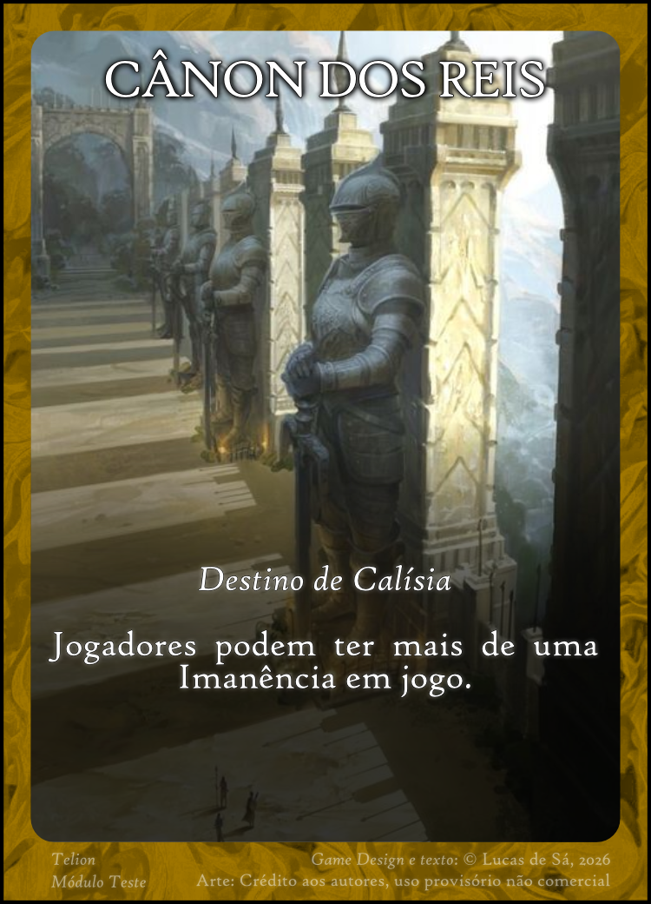
Em Efelion, os fios do destino são mais maleáveis, leves como o incenso, esguios como os riachos. Os mais atentos ao sobrenatural são capazes de ver e ouvir aquilo que os espíritos escondem.

Palavras-chave
Oculto
Você pode jogar uma carta virada para baixo; esta carta terá o valor e os efeitos que você disser que ela tem. Outro jogador pode duvidar de suas afirmações. Se você for questionado, revele sua carta:
- Caso ela tenha Oculto, o jogador que duvidou descarta duas cartas de sua mão, e a carta virada para baixo é virada para cima e passa a ter seus valores reais;
- Caso ela não tenha Oculto, ela é descartada e você descarta uma carta de sua mão.
Galeria de cartas


Nos campos de Osper, aqueles de espírito bravio herdam o louvor das gerações. Os que anseiam por liberdade a conquistam com perícia e os dignos recebem o mistério do sagrado metal Osperita.

Palavras-chave
Equipamento
Ao ser ativada, esta carta deve ser ligada a outra. A carta ativada com Equipamento não pode ser alvo direto de ataques, mas pode ser alvo de efeitos; além disso, ela continua provendo pontos igual ao valor de ativação.
Reação
Esta carta pode ser ativada do campo ou diretamente de sua mão a qualquer momento, sem consumir ações do turno. Se for ativada da mão, ponha-a em campo na forma ativada.
Galeria de cartas


Lorvad, País dos Cavaleiros. Muitos dos que aqui crescem aprendem desde cedo que a vida não é dada, mas deve ser conquistada. O Caminho é não dobrar os joelhos antes de brandir a lança.

Palavras-chave
(Este set não possui palavras-chave específicas).
Galeria de cartas


Os segredos dos mortos estão guardados sob o véu inseparável do submundo, porém ocasionalmente alguns conseguem escutar os sussurros que vêm do outro lado; principalmente quando se trata dos divinadores de Margun.

Palavras-chave
(Este set não possui palavras-chave específicas).
Galeria de cartas